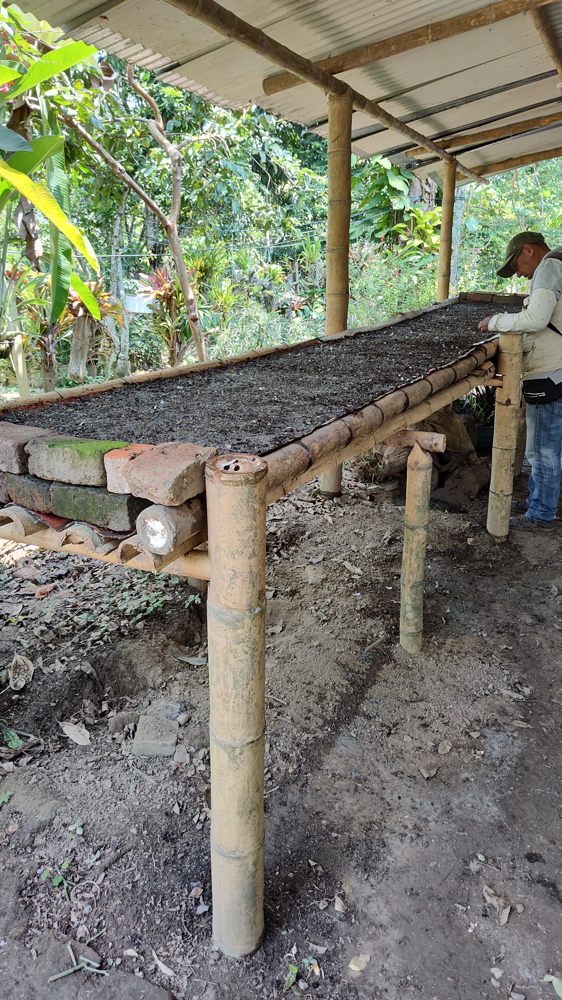
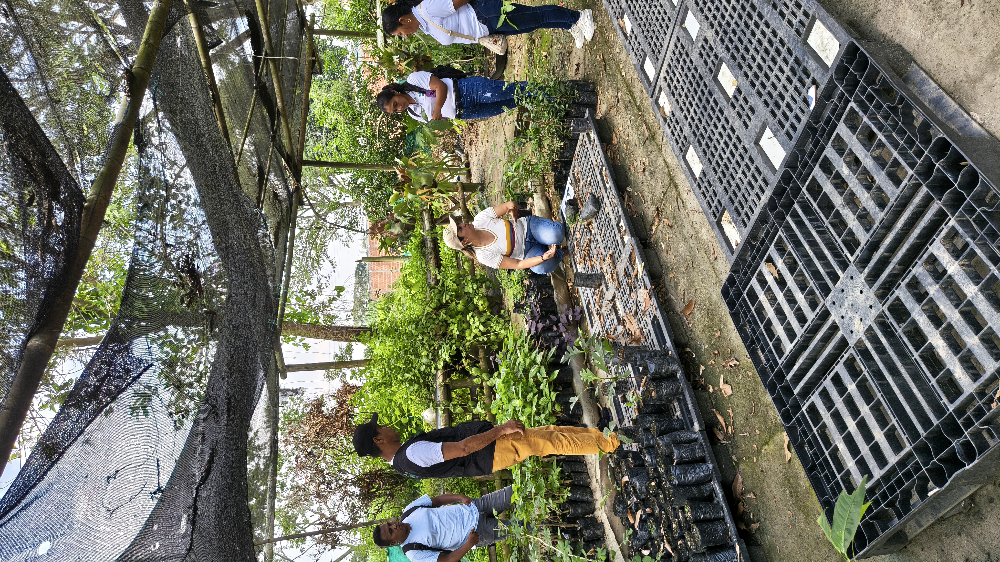
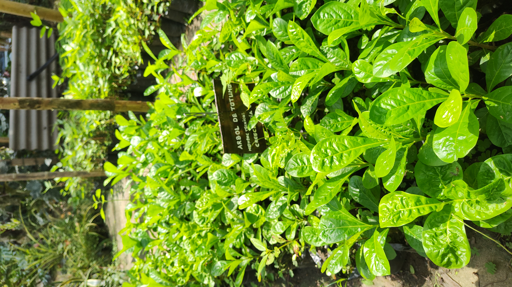

📸 Galería fotográfica





Vivero Comunitario
Vereda La Paila
Corinto, Cauca
8 años
6.000 árboles
| Grupo | Cantidad |
|---|---|
| 👧 Niñas | - |
| 👦 Niños | - |
| 👩 Mujeres adultas | 1 |
| 👨 Hombres adultos | 1 |
| Total | 2 |
Amarú Planet es una iniciativa comunitaria nacida de la preocupación por los impactos ambientales ocasionados por la extracción de materiales sobre el río La Paila. Desde entonces, su labor se ha centrado en la restauración ecológica, la producción de especies nativas y el fortalecimiento de la conciencia ambiental en el territorio.
Más que un vivero, representa una apuesta comunitaria por la defensa del ambiente y la recuperación de áreas degradadas mediante el trabajo constante y el compromiso de quienes han sostenido el proceso a lo largo de los años.
El vivero surgió aproximadamente hace ocho años como respuesta a los impactos ambientales generados por la extracción de material sobre el río La Paila, una actividad que afectaba de manera significativa los terrenos cercanos y las dinámicas ecológicas de la zona.
Ante la falta de apoyo institucional y herramientas legales para afrontar esta problemática, algunos habitantes de la vereda decidieron formarse mediante un programa técnico ambiental ofrecido por el SENA. Al finalizar este proceso, y gracias a la gestión de líderes comunitarios, lograron acceder a insumos provenientes de un programa ambiental de la Gobernación del Cauca.
Con estos recursos se adecuó un pequeño espacio de aproximadamente diez metros cuadrados que dio origen al vivero. Desde entonces, el objetivo principal ha sido contribuir a la recuperación ambiental del territorio, facilitar el acceso a árboles nativos y fortalecer la defensa comunitaria de los ecosistemas locales.
El vivero funciona gracias al compromiso permanente de dos personas que distribuyen las tareas según sus capacidades y disponibilidad. Entre las principales actividades se encuentran:
La planeación del trabajo se adapta a las condiciones climáticas. Durante los primeros meses del año se preparan los materiales necesarios para la producción, mientras que en épocas secas se incrementan las labores de riego y mantenimiento.
El vivero produce especies forestales, protectoras, ornamentales y de interés comunitario para procesos de restauración ecológica y protección de fuentes hídricas.
| Nombre Común | Nombre Cientifico |
|---|---|
| Nacedero | Trichanthera gigantea |
| Balso | Ochroma pyramidale |
| Chicalá | Tecoma stans |
| Cedro Rosado | Cedrela odorata |
| Árbol del Pan | Artocarpus altilis |
| Totumo | Crescentia cujete |
| Samán | Samanea saman |
| Gualanday | Jacaranda caucana |
| Guayacán Rosado | Tabebuia rosea |
| Guayacán amarillo | Handroanthus crhysantus |
| Guayacán de Manizales | Lafoensia acuminata |
| Chachafruto | Erythrina edulis |


Responsable del proceso: Victor Ayala
Rol: Lider Comunitario
Teléfono: [TELEFONO]
Correo: [CORREO]